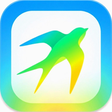

작품
주요 작품 7개와, 그 밖에 만든 것 중 26건. 기간과 상태는 2026년 10월 기준. 이름만이라면 첫 페이지의 점에 손을 대면 전부 나온다.
주요 작품

ScienceTokyo App대학 생활을 하나로.도쿄과학대학 학생을 위한 앱 PolyLinga스스로 깨달으면, 몸에 익는다.예문·AI 첨삭·음성의 다국어 학습 PWA
PolyLinga스스로 깨달으면, 몸에 익는다.예문·AI 첨삭·음성의 다국어 학습 PWA ことのあめ말의 잎은 말의 비로 자란다.같은 형태의 예문이 음성과 함께 비처럼 내린다
ことのあめ말의 잎은 말의 비로 자란다.같은 형태의 예문이 음성과 함께 비처럼 내린다 ことのおと아는 차이와 들리는 차이는 다르다.중국어 성조를 구별해 듣고 말하기
ことのおと아는 차이와 들리는 차이는 다르다.중국어 성조를 구별해 듣고 말하기 ことのは빌린 말이 내 말이 될 때까지.일본어를 섞어 말해 보는 영어 앱
ことのは빌린 말이 내 말이 될 때까지.일본어를 섞어 말해 보는 영어 앱- ことのね외운 한국어를 한자의 뿌리로 잇는다.한국어 한자어를 쳐서 모은다
- ことのえだ친구에게 하는 말을, 윗사람에게도.윗사람에게 쓰는 한국어 어휘를 문장과 사람과 목소리로
그 밖의 작품
-
2025-12 〜 운영 중
TextNext
도쿄과학대학 학생끼리 교과서를 주고받는 교내 전용 중고 장터. 공동 개발로, 2026년 5월부터 참여.
-
2026-10 개발 중
TextNext 타 대학판
대학 메일 도메인으로 대학마다 장터를 나눈 재구축.
-
2026-10 〜 개발 중
축제 모바일 오더
학교 축제 노점에서 손님이 휴대폰으로 주문해 QR을 띄우고, 계산대는 그걸 읽어 현금으로 계산만 하게 한다. 소개 영상, 운영 PDF, 제안 슬라이드까지 만들었다.
-
2026-08 완성
아르바이트 연 수입 벽 시뮬레이터
일본의 '연 수입의 벽'으로 실수령액이 어떻게 바뀌는지 2026년 제도로 계산한다. 제도 수치는 1차 자료와 대조했다.
-
2025-12 보류
SwaLo
대학 메일로 가입하는 도쿄과학대학 학생용 SNS. 채팅의 4개 언어 번역, 매일 아침 AI 뉴스 요약, 교내 건물의 층별 위치 공유까지 만들었다. ScienceTokyo App보다 3개월 앞서.
-
2025-07 〜 12 보류
Poly-Lang
첫 어학 앱. 한국어를 시작한 달에 기획서와 요구 사항 정의를 하루 만에 쓰고 만들기 시작했다. 17개 언어의 기본 문장을 음성과 함께 훑어보고, 직접 만든 문장을 AI에게 고쳐 받는다. 12월에 PolyLinga로 다시 만들었다.
-
2026-05 〜 08 보류
Wordtock
영어는 써서 쓸 수 있게, 한국어는 단어장형으로, 언어마다 배우는 방식을 나눈 어휘 앱.
-
2026-01 완성
langpack
PolyLinga를 위해 만든 9개 언어·498개의 기본 문장.
-
2026-03 프로토타입
jp-key
왼손으로 자음, 오른손으로 모음을 치는 직접 만든 일본어 입력 배열.
-
2026-03 완성
성경을 읽고 생각한 것
성경을 원문으로 읽고 사실·고찰·질문을 14장으로 정리한 일본어·한국어 사이트.
-
2026-02 〜 05 완성
소설 집필
기획과 규칙을 정하고, 본문은 Claude 에이전트가 쓴 이세계 소설. 6작품, 전 271화.
-
2026-03 프로토타입
트롤리
'사람은 먼저 고르고, 나중에 의미를 읽는다'를 체험하게 하는 사이트.
-
2026-07 〜 10 완성
즌다몬 해설 메이커
대본 한 장으로 음성·자막·도표·판서가 있는 해설 영상을 자동으로 만든다. 46편을 뽑았다.
-
2025-09 〜 개발 중
경우의 수·확률 정복
수험 때 정리한 것을 후배용 LaTeX 교재와 해설 영상으로 만들고 있다. 교재는 2024년 6월의 초판 36쪽에서 50쪽까지 늘렸다.
-
2026-08 완성
mp4cut
mp4 자르기와 확인만 할 수 있는 동영상 편집 프로그램.
-
2026-08 완성
ちょうど5
완전히 분석한 CPU와 겨루는 손가락 놀이.
-
2026-07 〜 09 운영 중
Claude Code 스킬
실패에서 배운 것을 적어 넣은 3개의 스킬(LP 제작, 해설 영상, 음성 합성).
-
2026-07 완성
랜딩 페이지
가상 기업 등의 랜딩 페이지 14건.
-
2025-11 〜 12 보류
sampo
산책 SNS. 걸은 길을 GPS로 기록하고, 지도를 약 250m 사방의 칸으로 나눠 걸어서 지나간 칸을 센다. 기획서를 쓰고 약 1주일 만에 공개했다.
-
2025-12 완성
AI Daily
생성 AI 뉴스를 모은다. AI 기업 블로그와 뉴스 사이트의 RSS 9개를 모아 중요도 점수로 늘어놓고, AI가 요약한다. 하룻밤에 만들어 공개했다.
-
2025-08 〜 개발 중
METAL
Meta Quest 3의 MR 안에서 금속판을 연마하고, 그 움직임을 기록·재생해 실물 크기 로봇으로 잇는 연마 작업 디지털 트윈. 연구와 업무로 개발하고 있다.
-
2026-04 〜 05 보류
Overcooked-RS
연구실의 멀티 에이전트 강화 학습용 환경. Rust로 작성했다.
-
2025-12 〜 개발 중
Head-Tracked 3D Box Illusion
머리 위치에 맞춰 화면이 상자 속을 들여다보는 창처럼 보이는 입체 착시.
-
2026-07 완성
Minecraft 재현판
브라우저에서 돌아가는 Minecraft 재현.
-
2026-01 프로토타입
RY3D
iPhone LiDAR로 PC에서 실시간 3D 재구성.
-
2026-05 프로토타입
rikoda
졸업 연구 후보 '휘파람 착각'의 실험 환경.
연락
메일이나 X로.